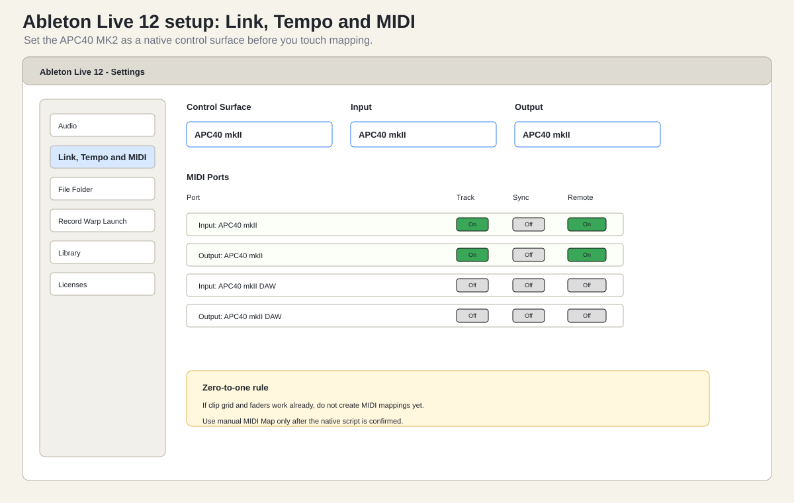

This is a separate book for the new Akai APC40 MK2. It assumes one controller only: the APC40 MK2 connected to Ableton Live 12. Do not connect the MPK yet. Do not build a combined rig yet. The first goal is to make the APC feel obvious: clip grid, scene launch, faders, track buttons, device knobs, sends, transport, and recording a simple performance into Arrangement View.
This guide is deliberately detailed. It is for the first sitting where the controller is new, Ableton Session View is still unfamiliar, and every light on the APC could mean three different things. The goal is not to memorize every button. The goal is to build one small, repeatable live set, press the correct controls in the correct order, and understand why they worked.
The visual plates in this book are original recreated diagrams and setup panels. They are not copied frames from YouTube, not screenshots from Ableton, and not Akai product art. They are intentionally screenshot-like because the practical need is visual: where to click, what to select, what button to press, and what the APC should be doing at that moment.

The book is chunked into sittings. Each chapter is one sitting: a short watch segment, a hands-on build or exercise, and a checkpoint that tells you what you should see and hear before moving on. Do not read ahead of your hands.
Checkpoints look like this:
Checkpoint. The APC grid lights up with your clip colors and pressing a lit button starts a loop. If not, nothing later in the book will work; go to the troubleshooting chapter first.
Two more habits that pay off immediately:
This book has a companion animated browser tutorial, “APC40 MK2 Don’t Cry Tonight Ableton Lab”, on the project’s GitHub Pages site. It walks the same Don’t Cry Tonight build step by step with an animated APC surface and Session grid. Use the book for depth and the tutorial for rehearsal.